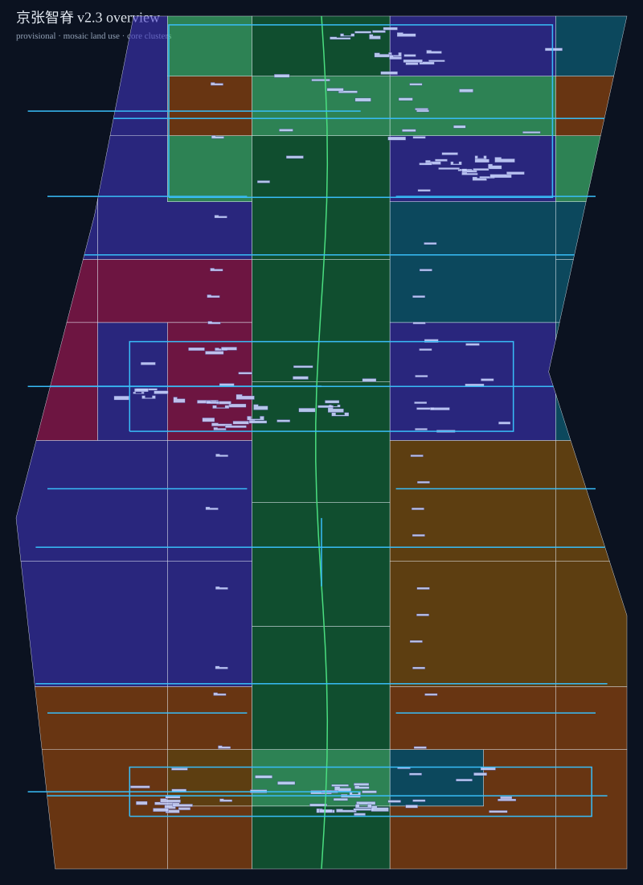

统筹 43.6
生态与区域接口
Offline board · GeoJSON projected map · provisional only · City API: interface/permission/rollback/audit

示意非测绘 · 4326/4548 · provisional 黄虚线
生态与区域接口
更新与结构
三核详设
units=30 buildings=94 roads=31 projects=14
沙盒·清河·治理
发布·转化·荣誉墙
路演·四象限·数据
分级廊道、断点修复、接驳口袋、可回退机器人试验段。
SCN-01
测试验证
SCN-03
测试验证
SCN-05
SCN-06
测试验证
SCN-08
SCN-09
SCN-10
SCN-11
SCN-12
概念建筑基底与街坊单元耦合，数量见 metrics building_count。
OS-01 至 OS-14 近中长期更新项目清单，含主体依赖 KPI 与回退。
sources.json / 公告 / 任务书 / source registry / provisional 边界说明。
assumptions.json：边界、控规、权属、市政、文保、活动、数据分级等待确认项。